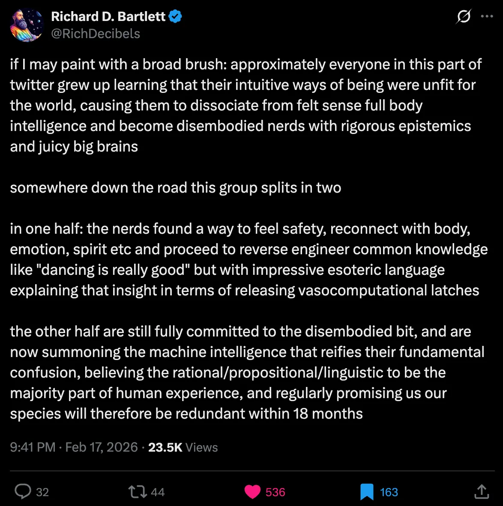
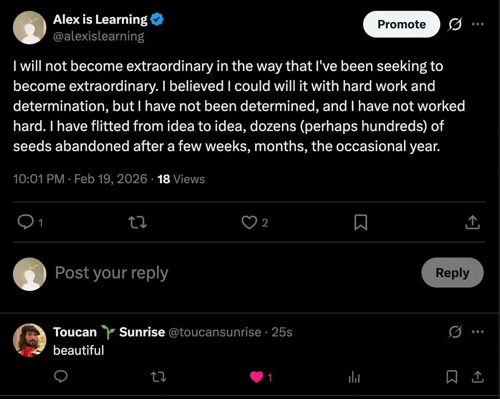
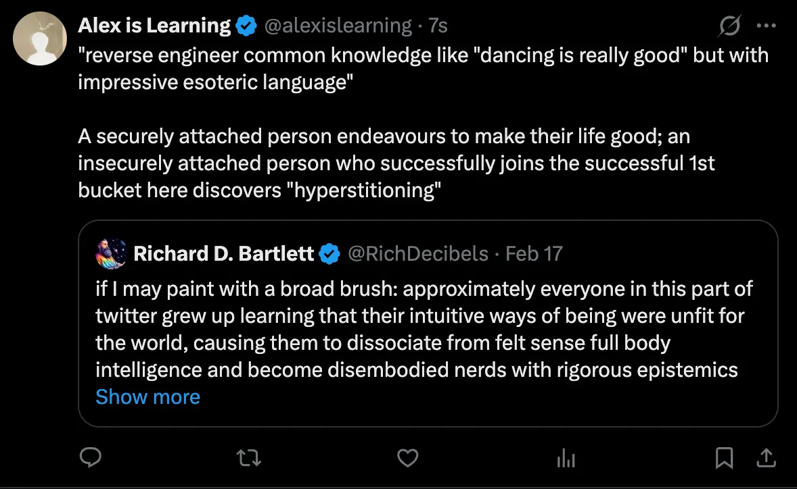

- Log per day - 2026
- What do you learn at private school that you don’t learn at a state school?
- This is quite a self-indulgent, lyrical, purple prose-y bit of writing! I was enjoying myself
Ramblings on being poorly educated
Mostly not interesting!
I literally cannot write without the imagined panopticon; it must be witnessed or else it does not exist; I do not count as a witness: the third literally from the first.1
I am, literally2, too unschooled to be published. Errors of ignorance, literally imperceptible to myself, loudly announce my meagre education. An English state school in the early 21st century, a perfunctory study of the English language, grammar, prose and poetry, metre, many other words that I cannot invoke (probably using that word wrong3 too), due to my ignorance, a lack of signifiers, despite a vague awareness of the signifieds, you’d assume, as a 29 year who has read a few serious books.
Think of the education of the elite. Think of “Dead Poets Society4”. Think of David Foster Wallace5.
And David’s thing of how the hardest thing that all undergraduates would have to learn is that their writing is not good just because they did it (which they are taught in highschool, when it is encouragement, not criticism, that they require, to garner the bravery to capture their newly emerging thoughts onto the page).
I’m not a fool for having not reached the further stage; it was a systemic outcome, no guilt or fault or surprise there6.
My fellow unschooled call me a great writer (when I share my minuscule fragments with them). What would the elites think? I know one, and her silence speaks truth loudly. My state-school-quality education, the rigour of a school system for the masses, no aim for excellence, admission of a few graduates to Oxford or Cambridge always a shocking surprise, a bonus, we’re just trying to have you enter a technical college of university programme, this now what the masses do, not so three decades prior. (With the associated devaluing of the undergraduate degree so commonplace as to hardly need mentioning).
- 👆 This is what going to a private school would be. Imagine, to be a child who from 5 to 18, went to private schools, the best in the country, and then to an elite university. These are the people who become geniuses. Almost every celebrity, almost every person of note, comes from the upper class, 95% at least. So difficult to find artistic role models who came from humble or deprived beginnings. (Rappers like Kendrick Lamar are rare exceptions, but even he has a English teacher who encouraged his poetry, saw a Biggie and Tupac video as a child (making it family lore that these people were real and could be experienced in the flesh, that their path could be followed)). This a real preoccupation of mine, and not a useful one - pontificating on how I ended up non-extraordinary. And this is a key theme below, and here I am doing it again, focusing on the lack, not the abundance. A ten year habit, forgive me, I’m getting much better at spotting it.
Tanha, my decade of folly
- Tanha
- This turned into a substack post btw

I will not become extraordinary in the way that I’ve been seeking to become extraordinary. I believed I could will it with hard work and determination. But I have not been determined, and I have not worked hard. I have flitted from idea to idea, dozens (perhaps hundreds) of seeds abandoned after a few weeks, months, the occasional year. Guitar the rare example of something I stuck with long enough for something to emerge from the soil, never sprouting petals, but still further along than most others reach here.
Writing: another bud, perhaps a petal of two. This is true: in the last year, I have made a few people, adult humans, unrelated to me, tear up, when reading my writing. That is not nothing! To move others. This is the same, actually, with my singing at the guitar. This is also the same, actually, and encouragingly, with songs that I have made. I can think of three original songs on my youtube channel that have heart-warmed comments.
(As a fun live bit of evidence here, I tweeted a paragraph from the above and someone literally just called it beautiful) 👇

This is also true: I have two fantastic references, from two people who I worked with (Ethan and Brent). These speak to my character, and show their genuine love of me, their passion, their desire to let others know. Beautiful.
And this brings me to the matter quite neatly, and this was not my intention when writing this, but perhaps that’s how these things go, you meander pleasantly and pointlessly until you find you’ve stumbled upon a clearing of great profundity, and one you had already been musing upon, perhaps you saw it in a dream first, such that arriving here feels like a waking up and a wry cheerful recognition of a thing known already7.
I have been seeking for the extraordinary outside of myself, outside of my life. “Perhaps, if I become/achieve [insert scheme here]”, then I will be extraordinary. Achieving that thing is an equivalent to extraordinariness.
And as such, I miss the plain fact that I am already extraordinary8. That if I close my eyes and reflect upon my life, the things that have happened to me, the things people have shown me, the things I have done, I will see a mountain of evidence that is more than incontrovertible, it’s weaved into the very fabric of my being, self evident like the sun. Literally not even worth pontificating on for a single instant. Any attempted intellectual rebuke withers to ash before it can even be fully thought.
Of course I am extraordinary. How am I extraordinary? Let me count the ways9.
And then of course, this idea, this path of discovery, such a common part of the human experience, of what we come to learn and try desperately to communicate to others who we see ensnared in their ignorance (and this just once example of a no-doubt enormous variety, it took Jed 2 years of solid writing to cut through all his bullshit).
That previous paragraph because the moment I went to write the phrases that did come to me and feel true, the moment I heard the cliched clang, their slippery hollow unreal resonance, worn smooth by constant use, use on deaf ears. They finally fall upon receiving ears, the receiver is stunned, and joins the chorus of attempting to convert the deaf to the genuine profundity. (Imagine how much more sophisticated David Foster Wallace’s thoughts must have been compared to mine; literally impossible for me to do. I would not have passed the entrance exam to attend Pomona where he taught, he taught bright well-educated kids, my lack of grammar would have been beyond him).
Pontificate on the lack, devalue what I have
But anyway, back to the matter at hand. That previous paragraph is also representative of my mistake here. I pontificate on what I lack, rather than facing and embracing what I have. It’s as simple as that, and as foolish. Those who love me are endlessly frustrated and saddened (gently, tenderly) to see me doing this, and hold out hope that one day this will change, and I am pleasant enough despite my misapprehension (sometimes very pleasant indeed, charming and funny and warm, sometimes tense and miserable and harried).
And this why women have loved me (well, one deeply, and a few have been interested at first before my immaturity caused various collapses). Baffling to myself, something that to this day does not fit into my paradigm. And this is why. People see my strengths, the good in me. I face away and look anxiously to an imagined horizon, squinting, taking various paths that lead nowhere, as the “out there” that I’m stumbling into is actually an illusion. I’m stumbling in place, ignoring my luck, my bounty, ones who love me, ones I could love, if I would only turn around.
Stopping the search is a cliche, and as is often the case, it is secretly profound, when you allow yourself to hear it.
And it’s not easy, because it involves dropping your gaze from that distant summit, that Ultimate Destination, that has been your north star for a decade. Imagine how deep the neural valleys of that thought, that valence, hope and redemption, extraordinariness, one day. A north star that saved me from despair, animated me. And I have a lot to thank it for; it is undeniable that it was very adaptive for a time, got me to good places. But like chemotherapy; whilst it eradicated some life-threatening malignancy (in this case, possible despair, nihilism, depression), it had poisoning side effects (my relationship, the deepest love of my life, could not survive my complete reorientation towards this north star, and the almost-total turn away from the present that this involved).
And this hints at the fact that neither stance is complete. Sometimes, we must think of our imagined future: goals, dreams, possible paths. Hyperstition a better life. And sometimes (far more often, it seems to me10, we must honour the now. It’s as simple as remembering to abide in the real, not the imagined, because the imagined is far more likely to lead you astray (for example, 10 years on a ~wild goose chase, all due to bad philosophy, a piece of ignorance atop which a life was built).

Kensho is more profound if you rejected layer 1
Becoming slightly less lyrical, it’s funny* how I keep re-stumbling across that stream entry/kensho experience of Layer 2 being foregrounded to layer 1 being foregrounded, and e.g. Guy (@nosilverv) - sensations vs imaginations model
This is, in a way, encouraging, as the 4 path model would presumably claim that until stream entry, all people are in a layer 2 foregrounded state.
But I do think that most people have lives built on less layer-2-encouraging bad philosophy than I had. I suppose what it was, was the the feeling of needing to “become extraordinary” and “stop being broken” literally led to a devaluing of the present moment, of layer 1, because my current state is that of brokenness, I am literally Not There Yet. Whereas if you don’t have that belief, if you like yourself, have positive self-regard, perhaps “secure attachment”, from good parenting etc, then you literally do not have the thing installed of “this isn’t good enough yet”. You feel good, you know you are good, you know that life is on the whole good. You remaining facing the day, you do not reject it and look to far off (imagined) peaks.
So, stream entry/kensho was needed for me in a way that it wouldn’t be needed for an Already Okay person. They already value layer 1, enjoy their lives, enjoy the now, plan things for the near future and then enjoy them when they arrive, spend enriching time with loved ones, etc. Whereas I was forced almost entirely into layer 2 pontificating and planning and looking outwards and devaluing the now, such that I needed a profound foreground-reversal to show me that I continue to exist when layer 2 briefly fades to the background, and not only that, I actually suffer far less. “Aha, I was doing a thing which was hurting me far more than it was helping me, and now it has stopped”.
And it came back, and I reengaged, force of habit, 8 years of habit at that point. But now I was all but guaranteed to have the same insight again, and again. From 0 to 1 is profound, almost a mathematical impossibility (perhaps, I wouldn’t know), and 1 to 2 is far more possible. It took perhaps 18 months of further distraction and habit, but I came across it again. And perhaps again now, 5 months later, with an in-person mentor to discuss it with. It doesn’t feel like another naive declaration of arrival at my north star to say this; it seems likely that this is a one-way road, and I am deepening into this insight, and this is an extraordinary thing to happen to someone who was not taught this by their upbringing.
I am good. This moment is good. I can welcome myself and this moment. I do not need to imagined horizon, that promised peak. And this will not click into place for me today - this is a 10 year unlearning that I have embarked upon. 2 years ago I took the first step, and these last 2 years I have still encouraged this seeking, this stumbling towards the imagined horizon. But I am gradually slowing, gradually seeing it as a mirage, and I am gradually becoming aware of the real life that has been happening despite all this, the bouquets of flowers thrown at my closed door. I am opening that door now, and I will thank the flower throwers for their patience, endeavour to repay them, grow a meadow of my own. The desire to write “time to begin”, but I do not possess the power to stop the stumbling forwards, and to open the door this instant. I have faith that these things will take care of themselves.11
The irony - devaluing the mountain of proof
Here I have been, gathering and creating many pieces of evidence that I am worthy, loved, good, okay. Good pieces of writing, songs that move people, but more potently, innumerable in-person moments of connection (“I literally can’t tell you how many times you make me smile per day”, something a mentor said to me recently).
And the irony that I make these things, experience these moments, broadcast the latest pieces of evidence that I am okay (for example, voice notes to friends about how well things are going, tweets to share my insights, substack posts to share the writing I am proud of), and then people throw flowers of appreciation into my open hands, and what do I do? Self-deprecate, hedge and excuse, downplay, and throw the flowers I opened my hands expectantly for behind me, out of my eye-line, out of my awareness!
And as such, I think there is no evidence of my goodness at all, although I have hazy recollections and a dim awareness that people do like me, when I remember to check. But ultimately, my eyes remain fixed on that illusory distant horizon, the Out There That Will Save Me One Day.
But how could someone with more proof of love that can be counted, need saving? Turn around!
(Relates to 08. Enneagram 3 thinking sins)
Footnotes
-
It’s tempting to add after-the-fact footnotes to this whole note to explain what I was on about (it’s a month later now). This is basically “isn’t it mad that I don’t write for myself, I have to publish my writings on this website in order to make thinking happen in a rigourous way”. ↩
-
More clunkiness makes my point ↩
-
Should it be “incorrectly”? ↩
-
Here too, I erroneously entered an apostrophe, another way that the language is not fluent to me (and that again is probably a nonsense phrase). I split the infinitive, or something. ↩
-
And of course, his mastery of the English language did not save him, dead before 50. But that is not fair. Does something have to be suicide-denying to be proven to have any value? Foolish. ↩
-
Actually, a lot of surprise, as this is not a point of view from which I abide. ↩
-
(Or perhaps it is far less poetic than that, and if you follow a line of thought, it naturally leads you to the next relevant point) ↩
-
Wow, the seeker is the sought. I was looking outside of myself that I would have found my looking inward, looking back. ↩
-
Somewhat pompous intertextuality given that the original author was writing a love poem for another. And to be clear, I very rarely have pith intertextual references; as you may have heard, I am fairly uneducated. And I owe my awareness of this poem to bell hooks. ↩
-
This where we should abide from? Is this me retelling “left-hemisphere capture”, the emissary stealing the throne from the master?). ↩
-
Also, it’s not like, a gradual change, as much as it is a gradual returning to the “I’m ok” state, and then falling out of it for ages, and then returning to it, and falling out again, and gradually you return more frequently, fall out less often, and your time existing in that state grows, until it’s where you abide from. I think that’s the progression here. It’s a binary, “am I in the state, or not”, and there’s a measure of how long you remain in the state. ↩